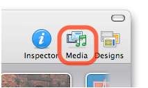

Media Browser
The Media Browser is a convenient way of accessing and utilizing your media files within Sandvox. So for example, rather than having to load the entire iPhoto application to find a photo, you can use the Media Browser.
Ways to hide or show the Media Browser:
-
Click the "Media" item in the toolbar.
 - Choose "Show Media Browser" or "Hide Media Browser" from the Window menu
To add an item from the Media Browser to a site, you use drag and drop. For example, you can:
- Drop an item onto a page to create a pagelet or insert an image in some text.
- Drag a media file to the Inspector to set an attribute.
- Drop an item in the Site Outline to create a new page.
You can refresh the Media Browser by clicking the refresh icon in the upper right of the top pane.
Supported Media
There are four types of media available in the Media Browser, each set to look for media in certain default locations. You can also set the Media Browser to look in other locations for media.
Photos
The Media Browser looks for photos in:
- iPhoto libraries
- Aperture libraries
- The "Pictures" folder in your Home Folder
Hover the mouse over an image to view more information about it.
Audio
The Media Browser looks for audio files in:
- Your iTunes library
- The "Music" folder in your Home Folder
- If you have them installed, the iLife and iMovie Sound Effects
Sandvox supports any audio files that Quicktime can handle. Note though that Protected AAC files will not work; most songs from the iTunes Store are in this format.
Movies
The Media Browser looks for movies in:
- Your iPhoto library
- The "Movies" folder in your Home Folder
Sandvox can handle any movie files that Quicktime supports except movies download from the iTunes Store. If you use any movies with an unusual codec, site visitors might have a problem viewing them.
Links
The Media Browser looks for bookmarks from these browsers:
- Safari
- OmniWeb
Other Locations
You can "teach" the Media Browser to look for photos, audio files and movie files in other folders as well.
To add a folder to the Media Browser:
- Open the Media Browser in Sandvox.
- Select the "Photos," "Audio" or "Video" section of the browser.
- Switch to the Finder and and begin dragging the folder you wish to add to the Media Browser.
- While dragging, use the command-tab keyboard shortcut to switch back to Sandvox.
- Drop the folder in the top pane of the Media Browser.
Settings
You can flip the Media Inspector over to change its settings.
To access the Media Browser's settings, click the "i" button at the top right-hand corner of the window. When you are done, click it again to return to the front of the Media Browser.